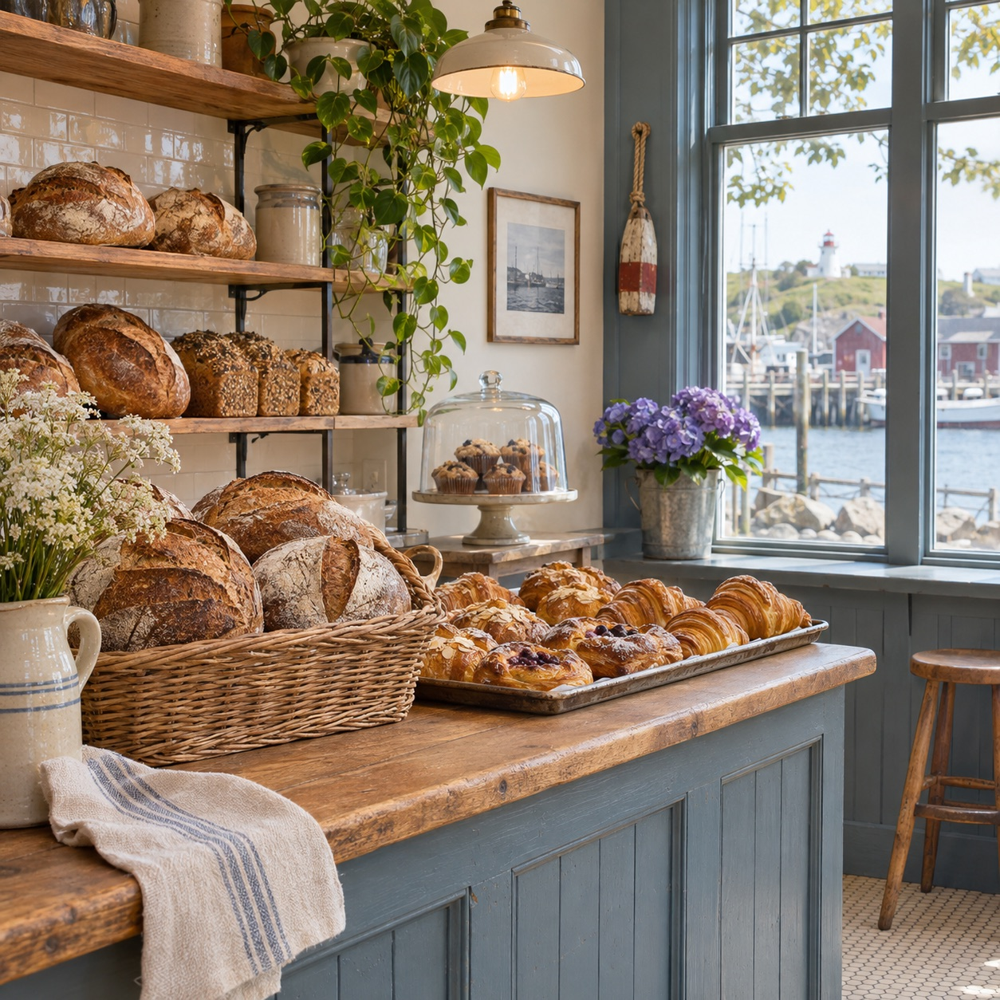

01 / THE EVERYDAY
Bread worth sharing
Crackly sourdough loaves and baguettes with the kind of crust you can hear.
Slow-fermented bread, buttery pastries, and something good to look forward to each morning in Halifax.
A few favourites from our sample bakery menu. Come by early for the best selection.
Crackly sourdough loaves and baguettes with the kind of crust you can hear.
Flaky croissants, fruit danishes, and cinnamon-swirled morning buns.
Custom cakes for birthdays and weddings, plus wholesale bread for local cafés and restaurants.

Harbourlight is imagined as the little bakery you make part of your routine: a loaf for the table, a pastry for the walk home, and a warm hello across the counter.
This is a fictional business created to demonstrate how Rose helps visitors find answers on a real-looking website.
Find the sample locationFind a fresh loaf, a favourite pastry, and a good reason to linger.
Monday–Friday 7am–6pm
Saturday 8am–4pm
Sunday Closed
1234 Harbour Street
Halifax, Nova Scotia
(902) 555-0134
hello@example.com